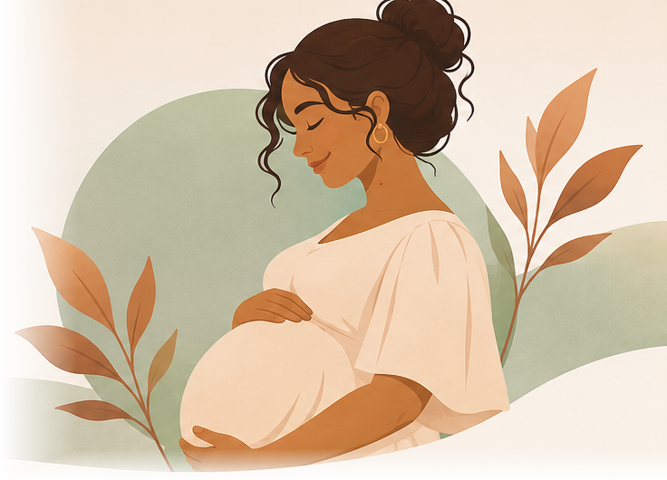

INFORMAÇÃO
Entender para decidir
Explicamos assuntos importantes em linguagem simples, sem deixar de lado os cuidados e as informações necessárias para decisões conscientes.
INFORMAÇÃO, CUIDADO E ACOLHIMENTO
Informações claras e acolhedoras sobre gestação, parto, pós-parto, direitos e redes de apoio, para você conhecer possibilidades, preparar perguntas e tomar decisões junto à equipe de saúde.

ENCONTRE O QUE PRECISA
Pesquise um assunto e encontre informações disponíveis no Jornada.
UM ESPAÇO PARA VOCÊ
O Jornada é um guia educativo criado para tornar informações sobre gestação, nascimento e pós-parto mais acessíveis, compreensíveis e acolhedoras.
INFORMAÇÃO
Explicamos assuntos importantes em linguagem simples, sem deixar de lado os cuidados e as informações necessárias para decisões conscientes.
ACOLHIMENTO
Cada gravidez e cada família vivem realidades diferentes. Aqui, suas dúvidas são tratadas com respeito e sem julgamentos.
AUTONOMIA
Conhecer opções, fazer perguntas e compreender seus direitos são partes importantes de um cuidado respeitoso.
Para gestantes, pessoas no pós-parto, adolescentes, familiares, acompanhantes e todas as pessoas que desejam compreender melhor essa etapa da vida.
EXPLORE
Você não precisa saber tudo de uma vez. Escolha o assunto que faz sentido para o seu momento e descubra as informações no seu ritmo.
CONHECIMENTO
Entenda as mudanças da gestação, as possibilidades de parto, a recuperação pós-parto e os cuidados com a saúde emocional.
As cartilhas podem ser abertas individualmente, para você ler apenas o assunto que procura.
Conhecer as fasesAUTONOMIA
Saiba o que significa consentimento informado, como participar das decisões e quais garantias existem durante o atendimento.
Encontre exemplos práticos para reconhecer situações de desrespeito e buscar orientação.
Conhecer meus direitosRESPOSTAS
Encontre respostas sobre enjoos, exames, hormônios, trabalho, decisões sobre o parto, amamentação e vida em família.
Também há orientações para adolescentes e familiares que estão vivendo uma gravidez.
Explorar as dúvidasACOLHIMENTO
Descubra como procurar atendimento pelo SUS, apoio psicológico, orientação social e ajuda em situações de violência.
Conheça serviços, contatos importantes e maneiras práticas de pedir ajuda.
Encontrar apoioACOLHIMENTO
Um espaço dedicado a quem viveu uma perda gestacional, fetal ou neonatal.
Encontre informações sobre recuperação, luto, direitos e caminhos de apoio, respeitando seu tempo e sua história.
Encontrar acolhimentoINFORMAÇÃO COM RESPONSABILIDADE
O Jornada ajuda você a compreender informações e formular perguntas, mas não substitui o acompanhamento de profissionais de saúde.
Nossos conteúdos utilizam referências de instituições como o Ministério da Saúde e a Organização Mundial da Saúde.
As páginas informativas incluem links para consulta das fontes.
Cada gestação possui características próprias. Exames, tratamentos e decisões devem considerar sua situação clínica.
Se surgir um sintoma preocupante, procure um serviço de saúde. Em situações graves, não espere a próxima consulta.
No Brasil, o SAMU atende pelo 192 . Se houver uma emergência de saúde, procure atendimento imediatamente.
Você merece informação, acolhimento e cuidado em cada etapa.